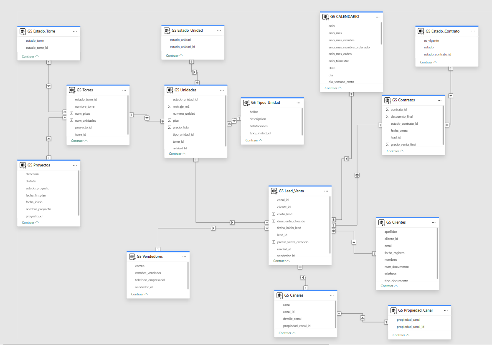

Capa de datos y modelo relacional
La capa de datos estructura la información comercial de Inmobiliaria Mayo para registrar clientes, leads, unidades de interés, asesores, canales de captación y contratos. Esta base relacional permite dar trazabilidad al proceso comercial desde el primer contacto hasta la conversión en venta.
Objetivo
Centralizar la información transaccional del funnel comercial inmobiliario en una base SQL ordenada y conectable con la solución cloud.
Tabla central
G5.Lead_Venta conecta cliente, unidad, vendedor, canal y condiciones comerciales de la oportunidad.
Uso analítico
Permite calcular leads generados, ventas concretadas, precio ofertado, descuento, costo del lead y ratio de conversión comercial.
Flujo lógico del modelo
El modelo representa el recorrido comercial de una oportunidad inmobiliaria: primero se define la oferta disponible, luego se registra el interés del cliente y finalmente se valida si el lead llega a contrato.
Proyectos
Registro de proyectos inmobiliarios, ubicación, fechas y estado.
Torres
Detalle de torres asociadas a cada proyecto.
Unidades
Inventario de departamentos o unidades disponibles, precio, piso y metraje.
Lead_Venta
Registro de oportunidad comercial, cliente, asesor, canal y unidad de interés.
Contratos
Formalización de venta y estado del contrato.
Modelo entidad-relación
El siguiente diagrama muestra las tablas implementadas, sus campos principales y las relaciones utilizadas para sostener la solución analítica.

Modelo relacional de la solución: proyectos, torres, unidades, leads, clientes, vendedores, canales y contratos.
Tablas del modelo
La base de datos fue organizada bajo el esquema G5. El diseño combina tablas maestras, catálogos y tablas transaccionales para representar el proceso comercial de forma ordenada.
| Tabla | Tipo | Descripción | Clave / relación principal |
|---|---|---|---|
| G5.Proyectos | Maestra | Almacena los proyectos inmobiliarios, distrito, dirección, fechas y estado del proyecto. | proyecto_id → Torres |
| G5.Estado_Torre | Catálogo | Define los estados posibles de una torre. | estado_torre_id → Torres |
| G5.Torres | Maestra | Registra las torres asociadas a cada proyecto, número de pisos, unidades y estado. | torre_id → Unidades |
| G5.Estado_Unidad | Catálogo | Define el estado comercial de cada unidad inmobiliaria. | estado_unidad_id → Unidades |
| G5.Tipos_Unidad | Catálogo | Clasifica las unidades según descripción, número de habitaciones y baños. | tipo_unidad_id → Unidades |
| G5.Unidades | Maestra | Contiene el inventario de unidades, incluyendo torre, piso, número, metraje, precio de lista y estado. | unidad_id → Lead_Venta |
| G5.Clientes | Maestra | Registra los datos del cliente potencial o comprador: documento, nombres, teléfono, correo y fecha de registro. | cliente_id → Lead_Venta |
| G5.Vendedores | Maestra | Almacena la información de los asesores comerciales responsables de gestionar leads. | vendedor_id → Lead_Venta |
| G5.Propiedad_Canal | Catálogo | Agrupa los canales según su propiedad o naturaleza comercial. | propiedad_canal_id → Canales |
| G5.Canales | Maestra | Registra los canales de captación de leads y su detalle. | canal_id → Lead_Venta |
| G5.Lead_Venta | Transaccional | Tabla central del modelo. Relaciona cliente, unidad de interés, asesor, canal, costo del lead, fecha, descuento y precio ofertado. | lead_id → Contratos |
| G5.Estado_Contrato | Catálogo | Define el estado del contrato y permite identificar si se encuentra vigente. | estado_contrato_id → Contratos |
| G5.Contratos | Transaccional | Registra la conversión final del lead, fecha de venta, descuento final y precio de venta final. | contrato_id, lead_id |
Relaciones principales
Relaciones de oferta inmobiliaria
Proyectos 1:N TorresTorres 1:N UnidadesTipos_Unidad 1:N UnidadesEstado_Unidad 1:N Unidades
Estas relaciones permiten analizar la oferta inmobiliaria por proyecto, torre, piso, tipología, metraje, precio de lista y estado de la unidad.
Relaciones comerciales
Clientes 1:N LeadsVendedores 1:N LeadsCanales 1:N LeadsLeads 1:N Contratos
Estas relaciones permiten seguir la trazabilidad de cada oportunidad comercial, desde el canal de origen hasta la venta o contrato final.
Indicadores que habilita la capa de datos
Leads generados
Conteo de registros en Lead_Venta, segmentado por fecha, canal, proyecto, asesor o unidad.
Ventas concretadas
Conteo de contratos registrados, considerando el estado contractual y la vigencia de la venta.
Ratio de conversión
Relación entre ventas concretadas y leads generados, expresada como porcentaje.
Evidencia técnica
El script SQL define la base BaseDatosPucpG5, el esquema G5, las tablas del modelo, sus llaves primarias y las llaves foráneas necesarias para mantener la integridad referencial.
| Elemento | Implementación |
|---|---|
| Base de datos | BaseDatosPucpG5 |
| Esquema | G5 |
| Tablas creadas | 13 tablas: maestras, catálogos y transaccionales. |
| Integridad | Llaves primarias y foráneas para conectar proyectos, torres, unidades, leads, clientes, vendedores, canales y contratos. |
| Uso posterior | Alimentación de ETL, warehouse y modelo de presentación en Power BI. |